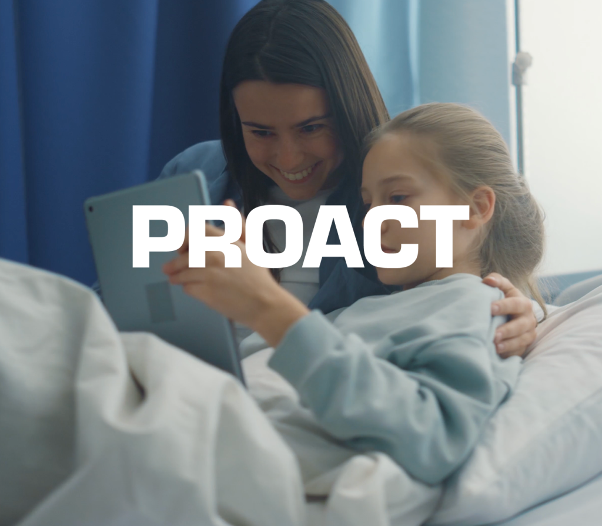
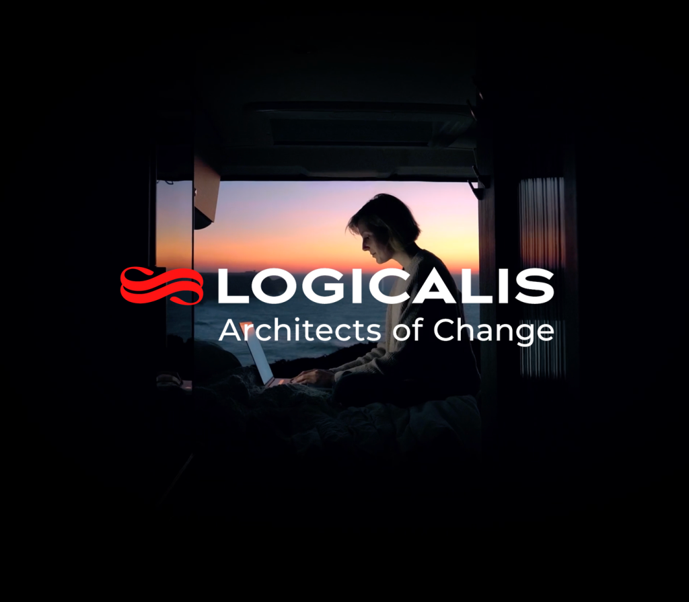
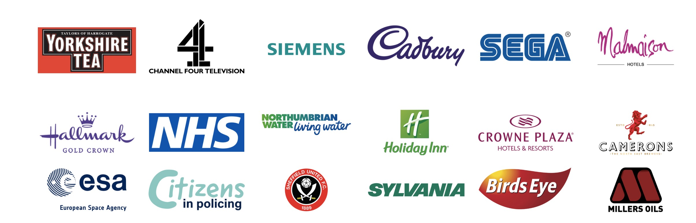

Work & Case Studies
Work that
earns its
place on screen.
We don't just show you what we made - we show you what it did. Every project below: the goal, what we delivered, and the result.
Scroll
We don't just show you what we made - we show you what it did. Every project below: the goal, what we delivered, and the result.
A cross-section of recent work - brand films, campaigns, and corporate storytelling for clients who needed more than a nice-looking cut. Hit play, scroll, or get in touch to see the finished films.

Yorkshire Tea needed cinematic content that captured the warmth and heritage of the brand - content that could run across TV, social, and digital. We handled everything from creative development through to final delivery.

SThree wanted content that positioned them as an innovator in the future of work. We created a visually striking brand film that connected the company's technology-forward thinking with the human stories behind it.

Head of Steam needed content that reflected the atmosphere and character of their venues - something that felt as alive as walking through the door. We produced a full campaign suite built around the real experience.

"Work that- Case study client
actually
moves the needle."

British Glass needed compelling case study content to communicate the impact of their work to industry stakeholders and the public. We produced a series of interview-led films that felt authoritative without being dry.

Proact wanted to move beyond technical messaging and show the real-world difference their technology makes to people's lives. We produced an emotionally driven brand film that led with the human story.

Logicalis - Architects of Change - needed content that matched their ambition. We produced a cinematic brand film that positioned them as a visionary technology partner, not just a supplier.
Long-running partnerships, niche product films, healthcare instructionals and member-acquisition video - a wider cross-section of what we ship for clients across sectors.

A decade-long partnership building DJB's online marketing presence - consolidating three websites into one, layering on SEO and social, and producing the videos that turned a regional waste operator into a category leader.

Places came to us wary after a previous bad video experience. We replaced it with a 1–2 day amends cycle, a welcoming new-member film, and a suite of campaign-ready social snippets that outperformed their previous stock-led creative.

An explainer-led product film for SmartTag, the tech-based security tool from SmartWater - built around the buyer's mindset rather than the spec sheet. The relationship grew into a full E-learning content programme.

Presenter-led, green-screen instructional videos for Preventx - providers of remote sexual health services to over 87% of England. Built as a re-brandable master so the films flex across every service in the portfolio.

Tell us about your goals and we'll come back with a clear approach, timeline, and quote - usually within 48 hours.